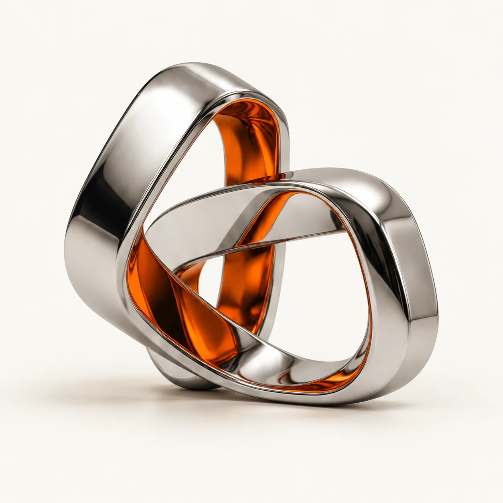

Start with the system.
Understand the data, the constraints, and the decisions that matter before choosing the technology.
Data architecture / AI / Digital products
I turn complex data and ambitious ideas
into useful, intelligent products.

Better data.
Brighter possibilities.
01 / The collection
From the underlying architecture
to the experience on screen.
Try a different search or explore the full collection.
02 / How I think
Good architecture makes complexity manageable. I connect the data, the decisions, and the interface to build tools people can actually use.
Understand the data, the constraints, and the decisions that matter before choosing the technology.
Bring AI into real workflows with clear evidence, meaningful controls, and people in charge.
Turn what happens behind the scenes into an experience that feels clear, focused, and intuitive.